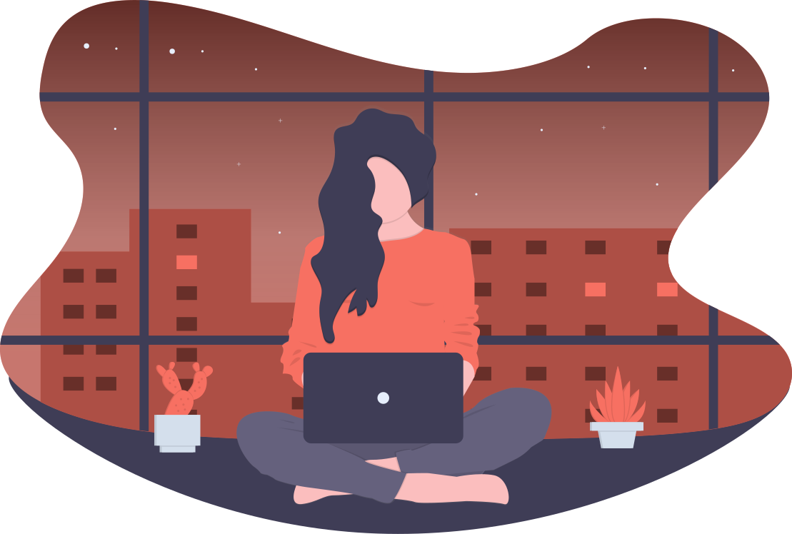
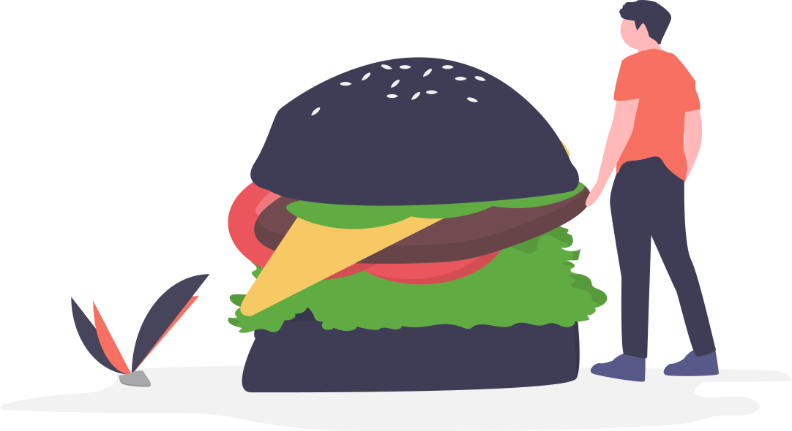

Как только вы поступите в Школу дизайна, то сразу почувствуете острую необходимость в уединении. Вам захочется найти место, в котором можно спокойно поделать домашную работу без лишних отвлекающих факторов. Если в ваших головах во время прочтения пронеслась мысль «А как же дом?», то смело можете ее выбросить. Почему? А об этом вы узнаете ниже.
На данном этапе, если вы раньше не сталкивались с подобным термином, у вас возникает намного больше вопросов. Начнем с самого начала.
Да, слово «коворкинг» звучит немного странно, но со стороны английского оно намного логичней. «Coworking» – это не «корова или король», это «совместная работа», что уже намного наглядней описывает значение данного слова. Коворкинг – очень полезная вещь в Школе Дизайна, хотя впринципе это пригодиться всем.

В нашей работе самое главное – уметь сосредотачиваться. Сделать это зачастую бывает не так просто, как может показаться. Для таких случаев и создан коворкинг – вы можете встретиться с друзьями в коком-либо месте и вместе работать над вашими делами. В таком главное четко обговорить то, чем вы будете заниматься, чтобы вдруг одного из вас не унесло на отвлекающую всех вас тему.

Доступность
Место для коворкинга не должно быть труднонаходимым, лучше всего, чтобы это место было недалеко от метро, чтобы после работы вы быстро смогли доехать домой. Вам особенно повезет если вы найдете это место рядом с домом.
Атмосфера
Здесь должно быть спокойно и достаточно тихо. На фоне может играть спокойная музыка, желательно без какой-либо смысловой нагрузки и желательно не музыкальные хиты, которые знает каждый второй, а следовательно не откажет себе в трех минутах перерыва, что особенно мешает концентрироваться на работе. Дом отпадает сразу, потому что там вам захочется расслабиться, посмотреть видосики или поспать, но никак не работать. Только единицы могут работать дома.

Обстановка
Вам должно быть уютно, чтобы хотелось вернуться сюда лишний раз. Цвета не должны пестрить красками, ибо они тоже будут отвлекать, но какие-то яркие элементы вполне могут присутствовать. Также рядом со столиками должны быть розетки, стулья должны быть мягкими и удобными.
Обслуживание
Здесь желательно, чтобы к вам не подходили каждые пять минут, чтобы не маячили перед глазами и стояли где-то поблизости, реагируя на каждое ваше движение. Но данный критерий подходит больше для кафе и ресторанов, если вы вдруг захотите и там поработать.

Еда и питье
Всем нам зачастую захочется что-либо пожевать во время мозговой активности и попить чай/кофе. Конечно, если вы не сильно придирчивый, то насчет этого можете не париться. Но вот если вы любите это дело, то нужно обязательно учитывать качество и наличие еды и горячих напитков.

Достаточно уютное место, где присутствуют wi–fi и розетки. Открывается рано и закрывается поздно. Цены, конечно, кусачие, а еда не такая уж вкусная (по крайней мере не вся), но на посидеть хватит. Находится достаточно недалеко от ВШЭ, что огромный плюс. Здесь работает система самообслуживания, потому маячить перед вами и подходит каждые 5 минут не будут.
Да, места хоть и маловато, но если вы займете его, то не пожалеете. У многих столиков есть розетки, wi–fi также есть и довольно неплохой, загружает быстро. Находится в двух шагах от метро, недалеко Плехановский университет, потому занять достойное место бывает проблематично, но оно того стоит.
Честно, лично мне там не особо понравилось, но многие положительно отзываются об этом месте. Там достаточно тихо, ничего не нагнетает, никто тебя не трогает. Кофе неплохой, еду не пробовала. Это место здесь лишь по отзывам других людей.
Лучшее место лично для меня. Там внусный кофе и вкусная еда по довольно привлекательным ценам. Ест розетки, с wi–fi косяк, но они вроде как решают этот вопрос. Там очень спокойно, музыка абсолютно не напрягает, людей мало и есть возможность уединиться. Люблю проводить там свободное время.
Атмосфера уютная, розетки есть и много места, есть что покушать и попить. Кофе вкусный, музыка ненапряжная, людей мало и официанты не снуют туда–сюда, потому мешать вам не будут. Грустно, что работает не круглосуточно, но да ладно.